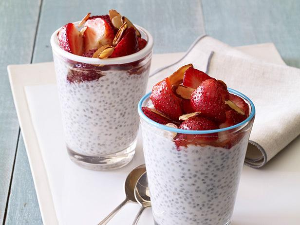

Greek Yogurt Chia Pudding

Description
An easy-to-make chia seed yogurt pudding refrigerates overnight. Top with your favorite fruit.
Ingredients
- 1 (5.3 ounce) container of vanilla Greek yogurt
- 2/3 cup milk
- 2 tablespoons chia seeds
- 1/2 tablespoon honey, or more to taste
- 1 cup chopped fresh fruit
Steps
Whisk Greek yogurt, milk, chia seeds, and honey together in a small bowl until well blended.
Cover and refrigerate overnight.
Before serving, stir to redistribute any seeds that may have settled. Top with your favorite fruit and enjoy!